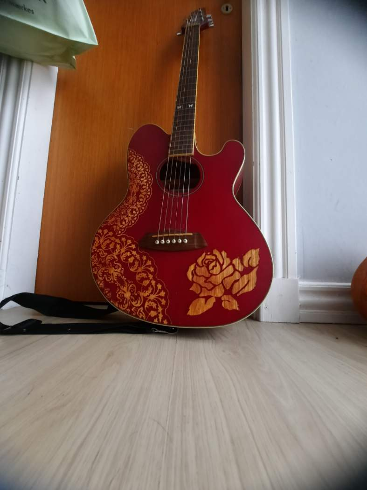

Emilies dybeste musikalske rødder ligger i den svenske folkemusik — fra de ældste middelaldersballader til landsbysange og vallåtar, der har lydt over de nordiske landskaber i århundreder.
Folkeviser
De svenske folkeviser er bærer af en rig fortælletradition, der strækker sig fra middelalderen til i dag. MLI tolker disse sange med en autenticitet og indlevelse, der giver dem nyt liv uden at miste forbindelsen til deres historiske rødder.
Fra de store episke ballader om riddere og trolddom til de mere intime hverdagsviser om kærlighed, tab og naturens gang — folkeviserne rummer hele den menneskelige erfaring. Emelie synger på originalsprog (svensk, gammelsvensk og til tider oldnordisk) og ledsager sig selv på guitar eller lyre.
Middelaldersballader
Middelaldersballaderne udgør en af de ældste levende sangtraditioner i Norden. Disse episke fortællinger om magiske væsener, heltemodige riddere og skæbnesvangre begivenheder blev sunget fra mund til mund i generationer, før de blev nedskrevet.
MLI har specialiseret sig i at fortolke disse ballader med historisk bevidsthed — ikke som museumsgenstande, men som levende kunstværker der stadig har kraft til at bevæge og forundre. Hun bruger historiske instrumenter som lyre og trommer for at genskabe et lydlandskab, der transporterer tilhørerne tilbage i tiden.
Tradition møder nutid
Selvom MLI's repertoire er rodfæstet i traditionel folkemusik, er hendes tilgang altid levende og tilgængelig. Hun skaber bro mellem fortid og nutid — og viser at folkemusikken ikke blot er et historisk fænomen, men en levende kunstform der stadig kan berøre og inspirere.
Gennem Visestuer, workshops og koncerter inviterer MLI publikum ind i folkemusikkens verden — stroferne læres fra grunden, historien bag sangene fortælles, og der synges i fællesskab. Det er folkemusik som fællesoplevelse, som den altid har været.
